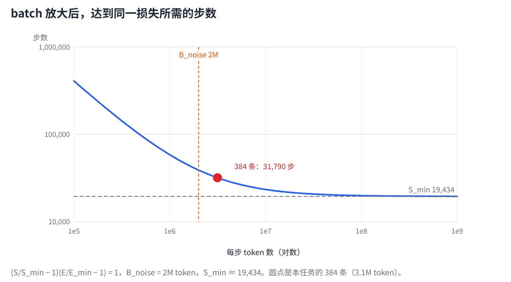
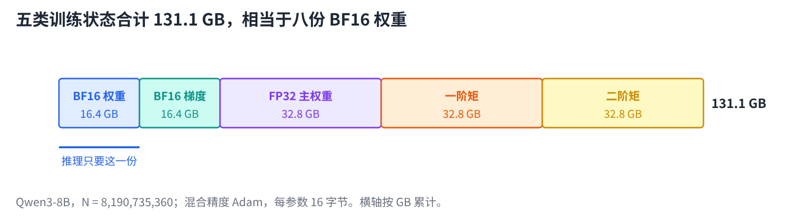
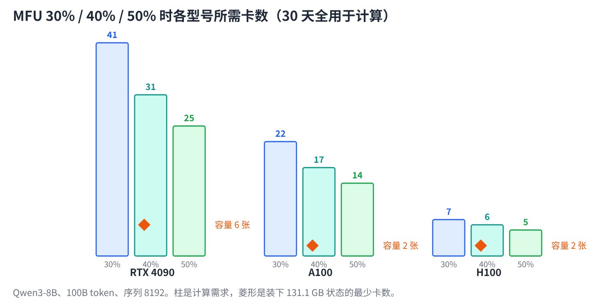
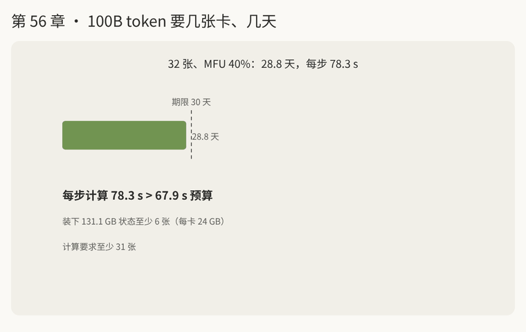

第 56 章 · 训练的容量与时间估算：100B token、30 天要几张卡
本地运行
git clone https://github.com/wikieden/ai-infra-from-constraints
cd ai-infra-from-constraints/code/notebooks
pip install jupyterlab torch numpy
jupyter lab ch56_training_budget.ipynb也可以下载后直接用 VS Code 打开 .ipynb 运行。需要 GPU 的章节在 Colab 里选「代码执行程序 → 更改运行时类型 → GPU」。
本章回答：能在一张卡上推理的模型，为什么不能在这张卡上训练？混合精度 Adam 每个参数为什么是 16 字节？100B token、30 天，每步只能花多少秒？batch 为什么取 384 条而不更大（临界 batch）？H100 至少几张、RTX 4090 至少几张？32 卡和 48 卡哪个在加通信前就已经超时？
讲解日期：2026-11-24 · 上一章：第 55 章 扩缩容、故障恢复与部署方案比较 · 下一章：第 57 章 训练状态的分片、重计算与卸载
对应原文：materials/ai-infra-book/manuscripts/10-训练系统.md章首 L1–L15、§10.1 L17–L146（图 10-1 至 10-5）
本章缩写：MFU = Model FLOPs Utilization（模型 / 浮点运算 / 利用率）· LoRA = Low-Rank Adaptation（低秩 / 适配）· FP8 E4M3（8 位浮点：4 位指数 / 3 位尾数）· Hessian（二阶导数矩阵）。全部缩写见 缩写与术语表
第 9 部分讲推理系统怎么把卡用满。本部分讲训练：状态更多、要留得更久，计算要等别的卡，还要扛住几周的故障。
本部分的贯穿任务（原文 L13）：用 Qwen3-8B 做领域继续训练，全参数、混合精度 Adam、序列 8192、100B 有效 token、30 天。比较 32 张和 48 张 RTX 4090 两套方案（每台主机 8 卡）。
讲解
第一步：任务与每步时间预算（2026-11-24）
类比：赶工期的装修队。 总共 30 天，先扣掉 5 天验收、等材料，剩下 25 天分到每一天，每天能花多少时间是定死的；每天的施工、等料、返工都得塞进去。
原文 L19–L27：
- 每步 384 条 × 8192 = 3,145,728 个有效 token（不算填充 token）。
- \(\lceil 10^{11} / 3{,}145{,}728 \rceil = 31{,}790\) 步。
- 30 天全用于训练要 38,600 token/s；扣 5 天给启动、评估、停顿，剩 25 天要 46,300 token/s。
- 25 天 ÷ 31,790 步 ≈ 67.9 s/步。每步的计算、通信等待、输入等待、分摊的 checkpoint 与故障恢复都在这 67.9 s 里。
LoRA 在原权重旁加小的可训练矩阵：基础权重仍参与前向，梯度和优化器状态主要按适配器参数算。本章是全参数训练。
一句话：先把期限和数据量换成"每步最多几秒"，后面每项设计都往这个预算里扣。
第二步：batch 为什么停在 384 条（2026-11-24）
类比：问路。 问 3 个人比问 1 个人可靠得多，问 300 个人比问 100 个人就没可靠多少了，却多花三倍时间。
原文 L29–L55：梯度噪声尺度
\(B\) 远小于临界 batch 时，batch 翻倍、步数几乎减半；超过以后，步数只略降，每步计算却翻倍。按临界 batch 训练，步数和样本数都是各自最小值的两倍。
取 \(B_{\mathrm{noise}} = 2\)M token（文献在大模型收敛时测得 1–2M），把 48 卡参考运行（31,790 步）当作恰好达标，反推 \(S_{\min} \approx 19{,}434\) 步、\(E_{\min} \approx 38.9\)B token；当前 batch 已是 \(B_{\mathrm{noise}}\) 的 1.57 倍。
| 卡数 | 弱扩展（每卡活不变，batch 跟着放大） | 强扩展（batch 不变，每卡活变少） |
|---|---|---|
| 48（参考） | 19.4 天 | 19.4 天 |
| 96 | 15.7 | 9.8 |
| 192 | 13.8 | 5.0 |
| 384 | 12.8 | 2.6 |
| 1536 | 12.1 | 0.8 |
- 弱扩展上限 \(31{,}790 / 19{,}434 \approx 1.64\) 倍：1536 卡把 batch 放大 32 倍，只从 19.4 天降到 12.1 天。
- 强扩展不受 \(B_{\mathrm{noise}}\) 限制，但每步 0.58 s 的通信与输入等待不变，0.8 天里已占约四分之一。
- 若 \(B_{\mathrm{noise}}\) 是 2000 万 token，弱扩展上限升到 7.36 倍。扩卡后 batch 能不能跟着放大，先估 \(B_{\mathrm{noise}}\)。

图 56-1 · 横轴是每步 token 数（对数），纵轴是达到同一损失所需的步数。过了临界 batch，步数趋近 \(S_{\min}\)，再放大 batch 只多花计算。
一句话：batch 超过梯度噪声尺度以后，加卡只能走强扩展。
第三步：每参数 16 字节（2026-11-24）
类比：装修的账本。 墙面本身（权重）之外，还要有这次的改动清单（梯度）、精确到毫米的原始图纸（FP32 主权重）、过去几次改动的趋势记录（两份矩）。
原文 L57–L112：
| 状态 | 字节/参数 | Qwen3-8B | 什么时候用 |
|---|---|---|---|
| BF16 权重 | 2 | 16.4 GB | 前向、反向矩阵运算 |
| BF16 梯度 | 2 | 16.4 GB | 反向产生，更新时用 |
| FP32 主权重 | 4 | 32.8 GB | 保存更新后的参数，再生成 BF16 副本 |
| Adam 一阶矩 | 4 | 32.8 GB | 跨步保留梯度方向历史 |
| Adam 二阶矩 | 4 | 32.8 GB | 跨步保留梯度平方历史 |
| 合计 | 16 | 131.1 GB（122.1 GiB） | 常驻训练状态 |

图 56-2 · 梯度改 FP32 就是每参数 18 字节；MoE 的专家也都有梯度和优化器历史，状态按全部可训练参数算。
- 显存峰值看同一时刻：\(M_{\mathrm{peak},i} = \max_t[M_{\mathrm{persistent}} + M_{\mathrm{activation}} + M_{\mathrm{temporary}}]\)。8 GiB 激活和 4 GiB 收集缓冲同时存在就要 12 GiB，先后出现就能复用。
- 精度：FP16 最小正规数 \(2^{-14}\)，小于 \(2^{-24}\) 直接变零，要损失缩放（乘 \(S\) 反传、更新前除回，8 到 32K）；BF16 指数位和 FP32 一样，不用缩放，但尾数只有 7 位，靠 FP32 累加。FP8 E4M3 最大 448，DeepSeek-V3 按块缩放（激活 1×128、权重 128×128，每累加 128 个转 FP32），相对损失误差 < 0.25%。
- FP8 只改送进矩阵单元的那份权重副本：每参数约 1.0002 字节，读权重 16.4 → 8.2 GB，常驻的 16 字节不变。
- 训练偏离表现为损失尖峰，常见处理是回滚到上一份 checkpoint（第 59 章）。
场景代码：PyTorch 里混合精度 Adam 的这几份状态是怎么来的（真实 API）：
import torch
model = MyModel().cuda() # 参数是 FP32（主权重 4 B）
opt = torch.optim.AdamW(model.parameters()) # 首次 step 后每个参数多出 exp_avg、exp_avg_sq（各 4 B）
with torch.autocast("cuda", dtype=torch.bfloat16): # 矩阵运算用 BF16 副本
loss = model(batch).loss
loss.backward() # 梯度（这里与参数同为 FP32；FSDP 可设成 BF16）
opt.step(); opt.zero_grad(set_to_none=True)
一句话：训练状态是推理权重的 8 倍；峰值看同一时刻有什么在显存里。
第四步：计算量、MFU 与卡数下界（2026-11-24）
类比：搬砖。 一共多少砖（总 FLOPs）÷ 每人每天能搬多少（峰值 × 效率）÷ 天数 = 至少几个人。房间够不够大（显存）是另一回事。
原文 L114–L145：一条 8192 token 序列前向 + 反向约 \(4.31 \times 10^{14}\) FLOPs，每 token 约 52.7 GFLOPs，100B token 共 \(5.27 \times 10^{21}\)。
- H100（989 TFLOP/s，40%）：每卡约 7,500 token/s，五张 37,600 < 38,600，至少六张。两张 80 GB 已装得下 131.1 GB，却要约 77 天。
- RTX 4090（165.2 TFLOP/s，40%）：至少 31 张。每步 \(1.66 \times 10^{17}\) FLOPs：32 卡每卡 78.3 s（不加通信就超了 67.9 s），48 卡 52.2 s（留下 15.7 s）。
- 40% 取自 Llama 3（405B，8K–16K 张 H100，BF16 MFU 38%–43%）；那组数已含通信，本章再单独加通信，结果偏长。

图 56-3 · 对本章任务，卡数主要由计算决定，容量下限低得多。
另外六成峰值去哪了，后面几章逐项回答：没藏住的通信（第 58 章）、流水线气泡（第 58 章）、受内存带宽限制的更新与转换（第 57 章）、重计算（第 57 章）、掉队者和 checkpoint（第 59 章）。前四项是模型必须计入的工作，后两项和没重叠的通信才是可优化的开销。
一句话：容量定能不能开始，计算定能不能按期；本任务由计算定卡数。
动画演示：卡数、效率与期限

可交互版：animations/56-training-budget.html（选择：H100 / A100 / RTX 4090；滑块：MFU 20–60%；卡数 1–64；期限 10–60 天）。
怎么看：
- 横条是只算计算时的完成天数，竖线是期限，越线变红（第四步）；
- 右边列出每步计算秒数和 67.9 s 预算的比较，以及装下 131.1 GB 状态最少几张卡；
- 播放：4090 32 卡（每步 78.3 s，超）→ 48 卡（52.2 s）→ MFU 30% → H100 6 张。
练习与作答记录
题 1（第一步）：同样 100B token，期限改成 20 天、预留 3 天。每步最多几秒？要多少 token/s？
作答记录：（待作答）
题 2（第三步）：一个 14B 参数模型，梯度用 FP32。常驻训练状态多少 GB？用 ZeRO 之前，一张 80 GB 卡能放下吗？
作答记录：（待作答）
题 3（第四步）：每 token 52.7 GFLOPs，A100（312 TFLOP/s）MFU 45%，30 天全用于计算。至少几张？用 25 天呢？
作答记录：（待作答）
口诀
先把工期换成每天几小时，再往里塞活；
问三个人比一个可靠，问三百个就是白跑；
墙面之外还有改动单、原图纸、两本趋势账，一共八份；
砖数除以人效除以天数，房子够大是另一回事。
本章复习卡片
I189（31,790 步、67.9 s/步、46,300 token/s；临界 batch 与弱 / 强扩展：S_min 19,434、上限 1.64 倍）、I190（每参数 16 字节 = 131.1 GB；FP16 损失缩放、BF16、FP8 分块缩放只改操作数副本）、I191（p = ⌈F/(PηT)⌉：H100 6 张、4090 31 张；32 卡 78.3 s 超、48 卡 52.2 s）。练习做完后，按答错、卡住的地方再补。
附录 · 延伸阅读
留给以后深入学习用，不影响本章主线。★ 是建议先读的。
推荐阅读
| 读什么 | 读哪里 | 读它为了什么 |
|---|---|---|
| ★ AII 第 10 章 | 章首、§10.1 L1–L146 | 本章原文 |
| McCandlish et al. 2018《An Empirical Model of Large-Batch Training》 | 梯度噪声尺度 | 临界 batch |
| Micikevicius et al. 2018《Mixed Precision Training》 | 损失缩放 | FP16 下溢 |
| DeepSeek-V3 技术报告 | FP8 训练 | 分块缩放 |
| 第 17 章 训练与强化学习的计算和状态 | 6ND、每参数 18 字节 | 前置 |
数学原理
- 双曲线关系：\((S/S_{\min} - 1)(E/E_{\min} - 1) = 1\)，\(E = SB\)；给定 \(B\) 解一元二次方程得步数。
- 下界：卡数 = 总工作 / 每卡能力 / 时间，上取整。
公式清单
| 公式 | 意思 |
|---|---|
| \(\lceil D/b \rceil\) | 步数 |
| \(B_{\mathrm{noise}} = \mathrm{tr}(H\Sigma)/(G^{\mathsf{T}}HG)\) | 梯度噪声尺度 |
| \(M_{\mathrm{persistent}} = 16N\) | 混合精度 Adam 常驻状态 |
| \(p = \lceil F/(P\eta T) \rceil\) | 计算卡数下界 |
代码对照：把本章的数字用代码算一遍
代码
ai-infra/solutions/chapter-code/ch56_training_budget.py，测试tests/test_ch56.py：
bash cd ai-infra/solutions/chapter-code uv run python ch56_training_budget.py uv run pytest tests/test_ch56.py
| 讲义 | 写法 | 跑出来 |
|---|---|---|
| 第一步 | steps() |
31,790 步、67.9 s |
| 第二步 | critical_fit()、steps_at(B, s_min, e_min) |
19,434 步、38.9B；弱扩展表 |
| 第三步 | state_bytes() |
131.1 GB、122.1 GiB |
| 第四步 | cards_for_compute(peak)、step_compute_s(cards) |
6、31 张；78.3 / 52.2 s |
代码里才看得到的 3 件事：
critical_fit解 \((x - 1)(kx - 1) = 1\) 得正根 \(x = (k + 1)/k\)，其中 \(k = B/B_{\mathrm{noise}}\)；所以 \(S/S_{\min}\) 只由 batch 是噪声尺度的几倍决定。- 每 token FLOPs 用 \(4.31 \times 10^{14}/8192 = 52.6\) G，原文写 52.7（总量 5.26 vs 5.27 × 10²¹），不影响卡数。
- 强扩展那列把每步拆成 \(52.2 \times 48/p + 0.58\) s，0.58 是通信 0.08 + 输入 0.5。
自己改一改（不影响练习答案）：
- 把
b_noise改成 4M，重算弱扩展那一列。 - 给
state_bytes加 LoRA：基础权重 2 字节，适配器 1% 参数按 16 字节。 - 算一张 B200（2.25 PFLOP/s）做本任务至少几张。